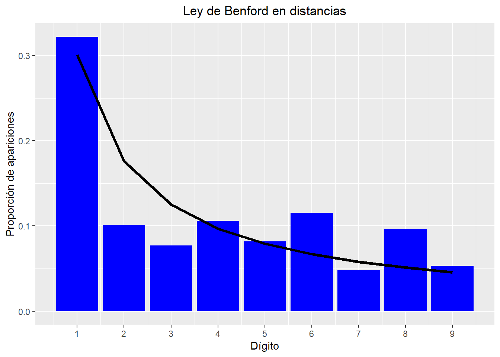

Por curiosidad pensamos ver si las distancias recorridas por los vuelos siguen la ley de Benford. Para ello tomamos los valores los valores no repetidos entre todas las y graficamos la frecuencia de su primer dígito.
library(ggplot2)#Benford's Law
# Leo el csv con los datos
df.vuelos <- read.csv("./csv/vuelos_2021.csv")
#tomamos las distancias positivas y nos quedamos con los valores unicos
distancias_pos <- df.vuelos$distancia.km.x[which(df.vuelos$distancia.km.x > 0)]
unicas.dist <- unique(as.integer(distancias_pos))
length(unicas.dist)
## [1] 208
#dividimos en los dígitos(transformando primero en un vector de caracteres) y nos quedamos con el primero usando function(x) x[1]
primer.digito.unicos <- sapply(strsplit(as.character(unicas.dist), split=''), function(x) x[1])
#ahora construimos un data frame con las proporciones de los dígitos
df.dist <- as.data.frame(prop.table(table(primer.digito.unicos)))
df.dist$primer.digito.unicos <- as.integer(df.dist$primer.digito.unicos)
y <- function(x) log(1+1/x, 10)
#realizamos el gráfico
ggplot(df.dist, mapping=aes(x=primer.digito.unicos, y=Freq)) +
geom_bar(stat='identity', fill='blue') +
labs(x='Dígito', y='Proporción de apariciones', title='Ley de Benford en distancias') +
theme(plot.title = element_text(hjust = 0.5))+
geom_line(mapping = aes(y = y(primer.digito.unicos)),size=1.3) +
scale_x_continuous(breaks=1:9, labels=c('1','2','3','4','5','6','7','8','9')) A partir del gráfico podemos ver que la distancia recorrida por los vuelos, que vendría a ser la distancia entre dos ciudades, se adapta bastante bien a lo establecido por la ley de Benford, salvo para los dígitos 5,7 y 9 que aparecen en mayor proporción a lo esperado.
Tenemos 208 distancias diferentes, puede que con más observaciones este comportamiento sea aún más evidente pero para esto necesitaríamos vuelos entre ciudades de más países.